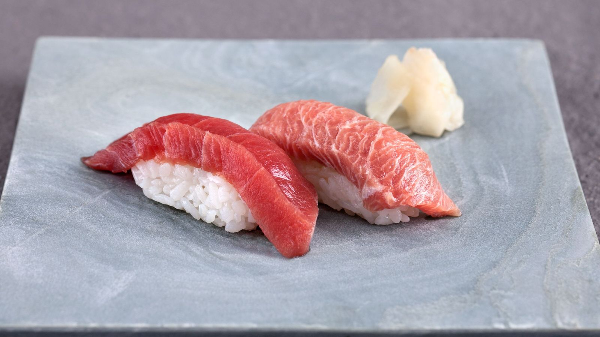

Nigiri sushi

Description
Seasoned rice is wrapped with fresh raw fish, cooked shrimp, or egg omelet for traditional Japanese nigiri sushi.
Ingredients
- 4 cups water
- 2 cups uncooked white rice
- ½ cup seasoned rice vinegar
- 1 teaspoon white sugar, or as needed
- 1 teaspoon salt, or as needed
- ¼ pound hamachi (yellowtail)
- ¼ pound maguro (tuna)
- ¼ pound cooked Ebi (shrimp), shelled and butterflied
- 6 eggs
- ½ teaspoon white sugar
- ⅛ teaspoon salt
- 1 teaspoon wasabi paste (Optional)
- 1 sheet nori, cut into 1-inch strips
Steps
- Make some of the sushi.
- ???
- Make the rest of the fucking sushi.